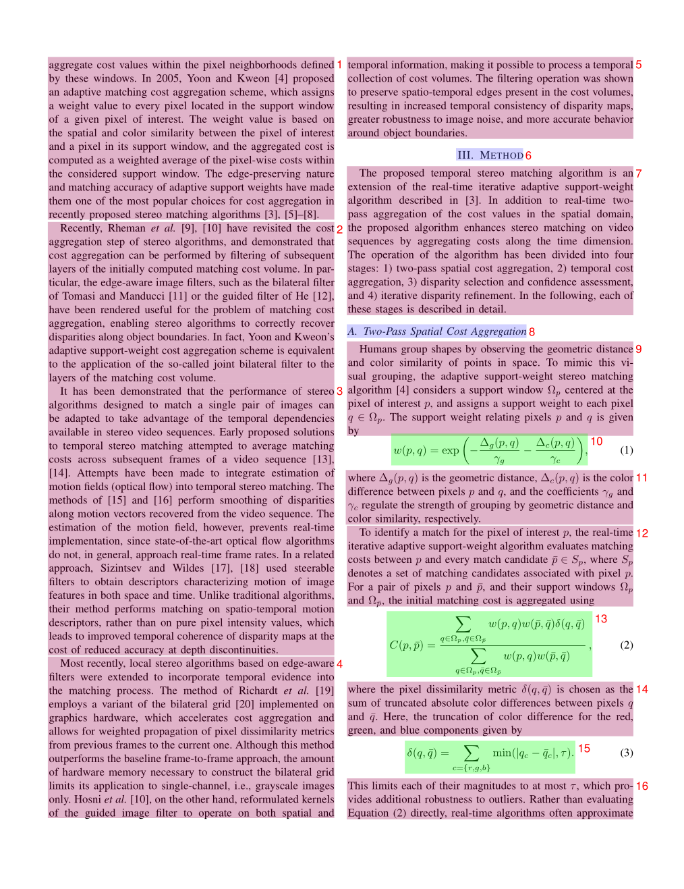
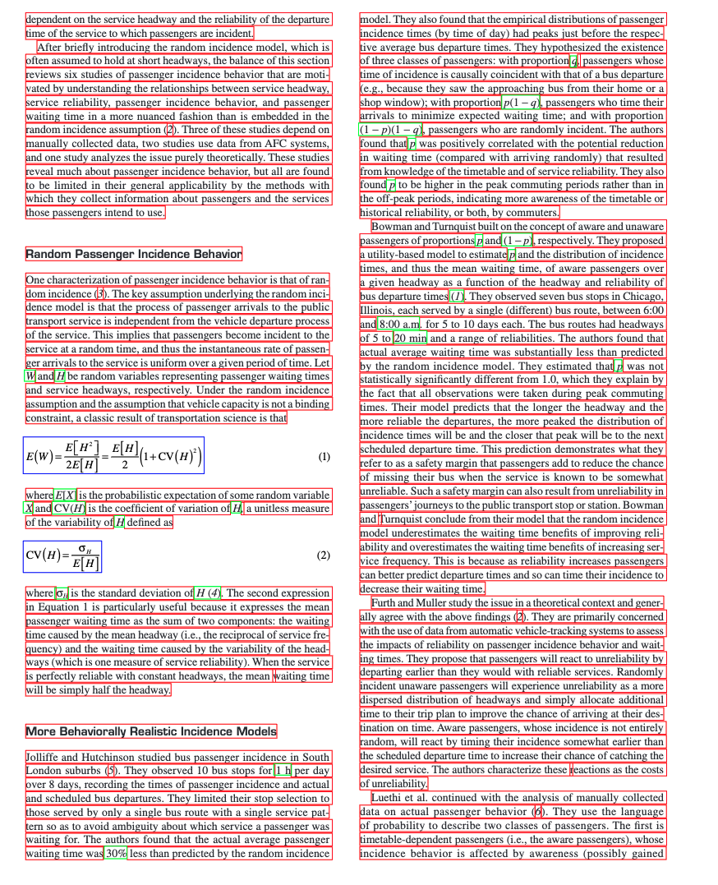
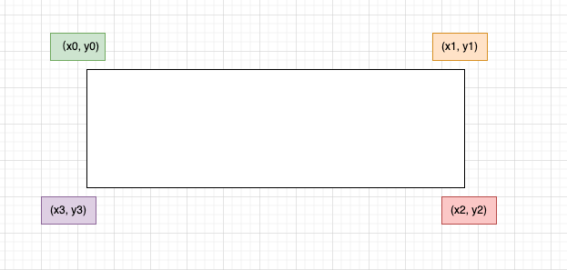

MinerU 输出文件说明
概览
mineru 命令执行后，除了输出主要的 markdown 文件外，还会生成多个辅助文件用于调试、质检和进一步处理。这些文件包括：
- 可视化调试文件：帮助用户直观了解文档解析过程和结果
- 结构化数据文件：包含详细的解析数据，可用于二次开发
下面将详细介绍每个文件的作用和格式。
可视化调试文件
布局分析文件 (layout.pdf)
文件命名格式：{原文件名}_layout.pdf
功能说明：
- 可视化展示每一页的布局分析结果
- 每个检测框右上角的数字表示阅读顺序
- 使用不同背景色块区分不同类型的内容块
使用场景：
- 检查布局分析是否正确
- 确认阅读顺序是否合理
- 调试布局相关问题

文本片段文件 (spans.pdf)
Note
仅适用于 pipeline 后端
文件命名格式：{原文件名}_spans.pdf
功能说明：
- 根据 span 类型使用不同颜色线框标注页面内容
- 用于质量检查和问题排查
使用场景：
- 快速排查文本丢失问题
- 检查行内公式识别情况
- 验证文本分割准确性

结构化数据文件
模型推理结果 (model.json)
Note
仅适用于 pipeline 后端
文件命名格式：{原文件名}_model.json
数据结构定义
from pydantic import BaseModel, Field
from enum import IntEnum
class CategoryType(IntEnum):
"""内容类别枚举"""
title = 0 # 标题
plain_text = 1 # 文本
abandon = 2 # 包括页眉页脚页码和页面注释
figure = 3 # 图片
figure_caption = 4 # 图片描述
table = 5 # 表格
table_caption = 6 # 表格描述
table_footnote = 7 # 表格注释
isolate_formula = 8 # 行间公式
formula_caption = 9 # 行间公式的标号
embedding = 13 # 行内公式
isolated = 14 # 行间公式
text = 15 # OCR 识别结果
class PageInfo(BaseModel):
"""页面信息"""
page_no: int = Field(description="页码序号，第一页的序号是 0", ge=0)
height: int = Field(description="页面高度", gt=0)
width: int = Field(description="页面宽度", ge=0)
class ObjectInferenceResult(BaseModel):
"""对象识别结果"""
category_id: CategoryType = Field(description="类别", ge=0)
poly: list[float] = Field(description="四边形坐标，格式为 [x0,y0,x1,y1,x2,y2,x3,y3]")
score: float = Field(description="推理结果的置信度")
latex: str | None = Field(description="LaTeX 解析结果", default=None)
html: str | None = Field(description="HTML 解析结果", default=None)
class PageInferenceResults(BaseModel):
"""页面推理结果"""
layout_dets: list[ObjectInferenceResult] = Field(description="页面识别结果")
page_info: PageInfo = Field(description="页面元信息")
# 完整的推理结果
inference_result: list[PageInferenceResults] = []
坐标系统说明
poly 坐标格式：[x0, y0, x1, y1, x2, y2, x3, y3]
- 分别表示左上、右上、右下、左下四点的坐标
- 坐标原点在页面左上角

示例数据
[
{
"layout_dets": [
{
"category_id": 2,
"poly": [
99.1906967163086,
100.3119125366211,
730.3707885742188,
100.3119125366211,
730.3707885742188,
245.81326293945312,
99.1906967163086,
245.81326293945312
],
"score": 0.9999997615814209
}
],
"page_info": {
"page_no": 0,
"height": 2339,
"width": 1654
}
},
{
"layout_dets": [
{
"category_id": 5,
"poly": [
99.13092803955078,
2210.680419921875,
497.3183898925781,
2210.680419921875,
497.3183898925781,
2264.78076171875,
99.13092803955078,
2264.78076171875
],
"score": 0.9999997019767761
}
],
"page_info": {
"page_no": 1,
"height": 2339,
"width": 1654
}
}
]
VLM 输出结果 (model_output.txt)
Note
仅适用于 VLM 后端
文件命名格式：{原文件名}_model_output.txt
文件格式说明
- 使用
----分割每一页的输出结果 - 每页包含多个以
<|box_start|>开头、<|md_end|>结尾的文本块
字段含义
| 标记 | 格式 | 说明 |
|---|---|---|
| 边界框 | <\|box_start\|>x0 y0 x1 y1<\|box_end\|> |
四边形坐标（左上、右下两点），页面缩放至 1000×1000 后的坐标值 |
| 类型标记 | <\|ref_start\|>type<\|ref_end\|> |
内容块类型标识 |
| 内容 | <\|md_start\|>markdown内容<\|md_end\|> |
该块的 Markdown 内容 |
支持的内容类型
{
"text": "文本",
"title": "标题",
"image": "图片",
"image_caption": "图片描述",
"image_footnote": "图片脚注",
"table": "表格",
"table_caption": "表格描述",
"table_footnote": "表格脚注",
"equation": "行间公式"
}
特殊标记
<|txt_contd|>：出现在文本末尾，表示该文本块可与后续文本块连接- 表格内容采用
otsl格式，需转换为 HTML 才能在 Markdown 中渲染
中间处理结果 (middle.json)
文件命名格式：{原文件名}_middle.json
顶层结构
| 字段名 | 类型 | 说明 |
|---|---|---|
pdf_info |
list[dict] |
每一页的解析结果数组 |
_backend |
string |
解析模式：pipeline 或 vlm |
_version_name |
string |
MinerU 版本号 |
页面信息结构 (pdf_info)
| 字段名 | 说明 |
|---|---|
preproc_blocks |
PDF 预处理后的未分段中间结果 |
layout_bboxes |
布局分割结果，包含布局方向和边界框，按阅读顺序排序 |
page_idx |
页码，从 0 开始 |
page_size |
页面的宽度和高度 [width, height] |
_layout_tree |
布局树状结构 |
images |
图片块信息列表 |
tables |
表格块信息列表 |
interline_equations |
行间公式块信息列表 |
discarded_blocks |
需要丢弃的块信息 |
para_blocks |
分段后的内容块结果 |
块结构层次
一级块 (table | image)
└── 二级块
└── 行 (line)
└── 片段 (span)
一级块字段
| 字段名 | 说明 |
|---|---|
type |
块类型：table 或 image |
bbox |
块的矩形框坐标 [x0, y0, x1, y1] |
blocks |
包含的二级块列表 |
二级块字段
| 字段名 | 说明 |
|---|---|
type |
块类型（详见下表） |
bbox |
块的矩形框坐标 |
lines |
包含的行信息列表 |
二级块类型
| 类型 | 说明 |
|---|---|
image_body |
图像本体 |
image_caption |
图像描述文本 |
image_footnote |
图像脚注 |
table_body |
表格本体 |
table_caption |
表格描述文本 |
table_footnote |
表格脚注 |
text |
文本块 |
title |
标题块 |
index |
目录块 |
list |
列表块 |
interline_equation |
行间公式块 |
行和片段结构
行 (line) 字段：
- bbox：行的矩形框坐标
- spans：包含的片段列表
片段 (span) 字段：
- bbox：片段的矩形框坐标
- type：片段类型（image、table、text、inline_equation、interline_equation）
- content | img_path：文本内容或图片路径
示例数据
{
"pdf_info": [
{
"preproc_blocks": [
{
"type": "text",
"bbox": [
52,
61.956024169921875,
294,
82.99800872802734
],
"lines": [
{
"bbox": [
52,
61.956024169921875,
294,
72.0000228881836
],
"spans": [
{
"bbox": [
54.0,
61.956024169921875,
296.2261657714844,
72.0000228881836
],
"content": "dependent on the service headway and the reliability of the departure ",
"type": "text",
"score": 1.0
}
]
}
]
}
],
"layout_bboxes": [
{
"layout_bbox": [
52,
61,
294,
731
],
"layout_label": "V",
"sub_layout": []
}
],
"page_idx": 0,
"page_size": [
612.0,
792.0
],
"_layout_tree": [],
"images": [],
"tables": [],
"interline_equations": [],
"discarded_blocks": [],
"para_blocks": [
{
"type": "text",
"bbox": [
52,
61.956024169921875,
294,
82.99800872802734
],
"lines": [
{
"bbox": [
52,
61.956024169921875,
294,
72.0000228881836
],
"spans": [
{
"bbox": [
54.0,
61.956024169921875,
296.2261657714844,
72.0000228881836
],
"content": "dependent on the service headway and the reliability of the departure ",
"type": "text",
"score": 1.0
}
]
}
]
}
]
}
],
"_backend": "pipeline",
"_version_name": "0.6.1"
}
内容列表 (content_list.json)
文件命名格式：{原文件名}_content_list.json
功能说明
这是一个简化版的 middle.json，按阅读顺序平铺存储所有可读内容块，去除了复杂的布局信息，便于后续处理。
内容类型
| 类型 | 说明 |
|---|---|
image |
图片 |
table |
表格 |
text |
文本/标题 |
equation |
行间公式 |
文本层级标识
通过 text_level 字段区分文本层级：
- 无
text_level或text_level: 0：正文文本 text_level: 1：一级标题text_level: 2：二级标题- 以此类推...
通用字段
所有内容块都包含 page_idx 字段，表示所在页码（从 0 开始）。
示例数据
[
{
"type": "text",
"text": "The response of flow duration curves to afforestation ",
"text_level": 1,
"page_idx": 0
},
{
"type": "text",
"text": "Received 1 October 2003; revised 22 December 2004; accepted 3 January 2005 ",
"page_idx": 0
},
{
"type": "text",
"text": "Abstract ",
"text_level": 2,
"page_idx": 0
},
{
"type": "text",
"text": "The hydrologic effect of replacing pasture or other short crops with trees is reasonably well understood on a mean annual basis. The impact on flow regime, as described by the annual flow duration curve (FDC) is less certain. A method to assess the impact of plantation establishment on FDCs was developed. The starting point for the analyses was the assumption that rainfall and vegetation age are the principal drivers of evapotranspiration. A key objective was to remove the variability in the rainfall signal, leaving changes in streamflow solely attributable to the evapotranspiration of the plantation. A method was developed to (1) fit a model to the observed annual time series of FDC percentiles; i.e. 10th percentile for each year of record with annual rainfall and plantation age as parameters, (2) replace the annual rainfall variation with the long term mean to obtain climate adjusted FDCs, and (3) quantify changes in FDC percentiles as plantations age. Data from 10 catchments from Australia, South Africa and New Zealand were used. The model was able to represent flow variation for the majority of percentiles at eight of the 10 catchments, particularly for the 10–50th percentiles. The adjusted FDCs revealed variable patterns in flow reductions with two types of responses (groups) being identified. Group 1 catchments show a substantial increase in the number of zero flow days, with low flows being more affected than high flows. Group 2 catchments show a more uniform reduction in flows across all percentiles. The differences may be partly explained by storage characteristics. The modelled flow reductions were in accord with published results of paired catchment experiments. An additional analysis was performed to characterise the impact of afforestation on the number of zero flow days $( N _ { \\mathrm { z e r o } } )$ for the catchments in group 1. This model performed particularly well, and when adjusted for climate, indicated a significant increase in $N _ { \\mathrm { z e r o } }$ . The zero flow day method could be used to determine change in the occurrence of any given flow in response to afforestation. The methods used in this study proved satisfactory in removing the rainfall variability, and have added useful insight into the hydrologic impacts of plantation establishment. This approach provides a methodology for understanding catchment response to afforestation, where paired catchment data is not available. ",
"page_idx": 0
},
{
"type": "text",
"text": "1. Introduction ",
"text_level": 2,
"page_idx": 1
},
{
"type": "image",
"img_path": "images/a8ecda1c69b27e4f79fce1589175a9d721cbdc1cf78b4cc06a015f3746f6b9d8.jpg",
"img_caption": [
"Fig. 1. Annual flow duration curves of daily flows from Pine Creek, Australia, 1989–2000. "
],
"img_footnote": [],
"page_idx": 1
},
{
"type": "equation",
"img_path": "images/181ea56ef185060d04bf4e274685f3e072e922e7b839f093d482c29bf89b71e8.jpg",
"text": "$$\nQ _ { \\% } = f ( P ) + g ( T )\n$$",
"text_format": "latex",
"page_idx": 2
},
{
"type": "table",
"img_path": "images/e3cb413394a475e555807ffdad913435940ec637873d673ee1b039e3bc3496d0.jpg",
"table_caption": [
"Table 2 Significance of the rainfall and time terms "
],
"table_footnote": [
"indicates that the rainfall term was significant at the $5 \\%$ level, $T$ indicates that the time term was significant at the $5 \\%$ level, \\* represents significance at the $10 \\%$ level, and na denotes too few data points for meaningful analysis. "
],
"table_body": "<html><body><table><tr><td rowspan=\"2\">Site</td><td colspan=\"10\">Percentile</td></tr><tr><td>10</td><td>20</td><td>30</td><td>40</td><td>50</td><td>60</td><td>70</td><td>80</td><td>90</td><td>100</td></tr><tr><td>Traralgon Ck</td><td>P</td><td>P,*</td><td>P</td><td>P</td><td>P,</td><td>P,</td><td>P,</td><td>P,</td><td>P</td><td>P</td></tr><tr><td>Redhill</td><td>P,T</td><td>P,T</td><td>，*</td><td>**</td><td>P.T</td><td>P,*</td><td>P*</td><td>P*</td><td>*</td><td>，*</td></tr><tr><td>Pine Ck</td><td></td><td>P,T</td><td>P,T</td><td>P,T</td><td>P,T</td><td>T</td><td>T</td><td>T</td><td>na</td><td>na</td></tr><tr><td>Stewarts Ck 5</td><td>P,T</td><td>P,T</td><td>P,T</td><td>P,T</td><td>P.T</td><td>P.T</td><td>P,T</td><td>na</td><td>na</td><td>na</td></tr><tr><td>Glendhu 2</td><td>P</td><td>P,T</td><td>P,*</td><td>P,T</td><td>P.T</td><td>P,ns</td><td>P,T</td><td>P,T</td><td>P,T</td><td>P,T</td></tr><tr><td>Cathedral Peak 2</td><td>P,T</td><td>P,T</td><td>P,T</td><td>P,T</td><td>P,T</td><td>*,T</td><td>P,T</td><td>P,T</td><td>P,T</td><td>T</td></tr><tr><td>Cathedral Peak 3</td><td>P.T</td><td>P.T</td><td>P,T</td><td>P,T</td><td>P,T</td><td>T</td><td>P,T</td><td>P,T</td><td>P,T</td><td>T</td></tr><tr><td>Lambrechtsbos A</td><td>P,T</td><td>P</td><td>P</td><td>P,T</td><td>*,T</td><td>*,T</td><td>*,T</td><td>*,T</td><td>*,T</td><td>T</td></tr><tr><td>Lambrechtsbos B</td><td>P,T</td><td>P,T</td><td>P,T</td><td>P,T</td><td>P,T</td><td>P,T</td><td>P,T</td><td>P,T</td><td>T</td><td>T</td></tr><tr><td>Biesievlei</td><td>P,T</td><td>P.T</td><td>P,T</td><td>P,T</td><td>*,T</td><td>*,T</td><td>T</td><td>T</td><td>P,T</td><td>P,T</td></tr></table></body></html>",
"page_idx": 5
}
]
总结
以上文件为 MinerU 的完整输出结果，用户可根据需要选择合适的文件进行后续处理：
- 模型输出：使用原始输出（model.json、model_output.txt）
- 调试和验证：使用可视化文件（layout.pdf、spans.pdf）
- 内容提取：使用简化文件（*.md、content_list.json）
- 二次开发：使用结构化文件（middle.json）